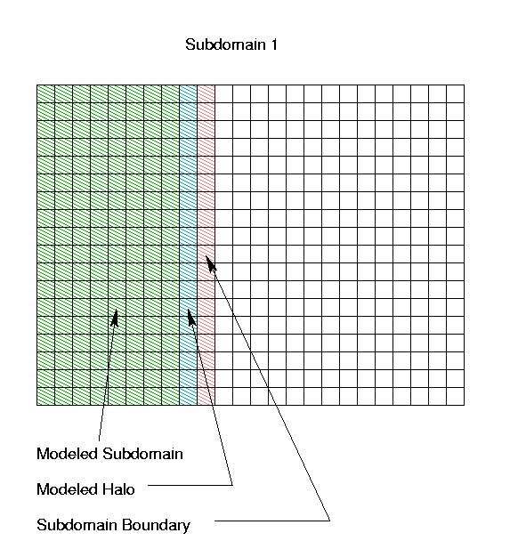
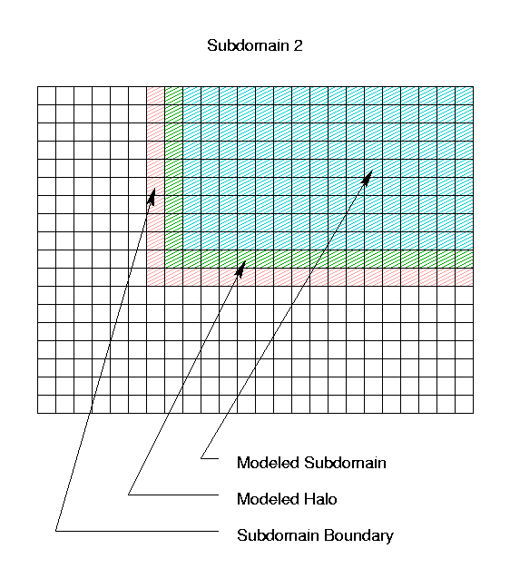

aqmaster
metserver
aqmmaster and
metserver. This approach may
be thought of as a special case of the nesting approach used
by the real-time MAQSIP air quality model: each nest grid has
a single air quality model working on just that grid; these AQM's
cooperate as a coupled parallel system, with the coarser grids
providing time dependent boundary conditions to the finer grids
nested within them, and potentially aggregation data on the coverage
within the coarser grids of concnetrations on the finer grid nested
within them.
The modeling process begins by decomposing the domain into
rectangular subdomains that overlap properly, and then putting the
description of these subdomains into an I/O API-standard
GRIDDESC file. The
metserver program reads the full-domain grid-geometry,
emissions, and meteorology files, and from them constructs windowed
grid-geometry, emissions, and meteorology files for each subdomain
in the decomposition. At every advection step, the
aqmmaster program assembles full-domain concentrations
from the outputs of the subdomain air quality models, and provides
time stepped boundary coonditions back to them, as well as
producing full-domain concentration outputs. The whole system is
tied together with the coupling-mode extensions for the Models-3
I/O API to perform distributed parallel domain-decomposed air
quality modeling across a set of machines.
Notice that all of the scheduling, coordination, assembly, and
extraction activities are managed by the aqmmaster
program, so that the subdomain air quality models are unmodified
(except for linking with the coupling-mode version of the
I/O API library and the PVM library, in addition
to the usual netCDF library). The source code of
the AQM is unaffected by this cooperating-process parallelism. No
more work writing schedulers, boundary-extractors, etc., needs to
be done by the modeler!
Both programs aqmmaster and metserver
are Fortran-90 dynamically-sized programs that adapt at run time to
the sets of met and chemistry variables being modeled, and to the
grids being run. They are basically independent of AQM being run,
as well, as long as the AQM uses the Models-3 I/O API for
input and output, uses the basic Models-3 scheme for meteorology
file types, and avoids deadlocks, and as long as the gridded met
files have all the variables necessary for windowing to produce
subdomain boundary met files.
Back to Contents
The reason for requiring this halo is the fact that in all existing CMAQ and MAQSIP implementations, there are errors in the implementation of thickened-boundary advection. If these errors were corrected, then the halos (and the computational overhead that goes with them) would no longer be necessary.
The portion of Subdomain 1 that is actually used to generate
concentration field output is as described above; however, in order
to preserve the full order accuracy of the horizontal advection
numerics, the air quality model for Subdomain 1 actually
models a region with a "halo" one column wider (and
extending into Subdomains 2 and 3). The boundary for this
subdomain then "lives" partly on column 10 of the
original full domain. It is the responsibility of the
aqmmaster program to gather rows 1-18, columns 1-8
from Subdomain 1 for the full-domain concentration output, and
to provide column 10 as part of the (time-dependent) boundary
values for Subdomain 1.

Similarly, the air quality model for Subdomain 2 actually
models a 10 row by 17 column region with an L-shaped halo; the
boundary for Subdomain 2 includes portions of column 6
and row 11, as illustrated below. Subdomain 3 is left as
an exercise for the reader :-)
Subdomain 2

Back to Contents
For the particular case of domain decomposed air quality modeling, the way this works is as follows:
metserver in the appropriate mode to
IOAPI_KEEP_NSTEPS necessary
for each coupled-mode process. This is the number of
time steps that it is necessary to keep in PVM-mailbox
memory for the system to operate.
Back to Contents
aqmaster aqmaster is as follows:
aqmaster to act
as a component in a cooperating-process implementation of a nested
AQM. It is also laid out so as to allow coupled
aqmaster and metserver to operate within
a cooperating process real time environmental modeling system with
additional meteorological and emissions model components (avoiding
race conditions in such a system, particularly, is the role of the
optional SYNCH_FILE).
aqmaster is controlled purely
by environment variables, for easy scriptability. Some of these
variables are control parameter variables, others are logical name environment variables for the
input and output files, which contain the path-names for the
respective files, according to Models-3 conventions. These
environment variables may be set by the csh
setenv command, or by the sh or
ksh set and export or
env commands. The list of environment
variables for aqmaster is the following.
STDATE
YYYDDD according to
Models-3 conventions.
STTIME
HHMMSS according to
Models-3 conventions.
CPLSTEP
HHMMSS (should match
the advection or model time step of a full domain AQM)
OUTSTEP
HHMMSS
RUNLEN
HHMMSS
GRIDDESC
WINDOW_XGRIDS
GRIDDESC file. The number of
entries in this list determines the number
SUB_COUNTof subdomains being modeled, and hence
the numbers of subdimain initial condition, boundary
condition, and concentration files used in the coupled
modeling system.
IOAPI_KEEP_NSTEPS
CHEM_BDY_3D
CHEM_INIT_3D
CHEM_CONC_3D
CHEM_BDY_3D_G<nn>,
for nn=1,...,SUB_COUNT
CHEM_INIT_3D_G<nn>,
for nn=1,...,SUB_COUNT
CHEM_CONC_3D_G<nn>,
for nn=1,...,SUB_COUNT
QA_CRO_2D
NONE to turn this file off.
SYNCH_FILE
NONE to
turn this file off.
Back to Contents
metserver metserver is as follows:
CHEM_EMIS_3D
GRID_BDY_2D
GRID_BDY_3D
GRID_CRO_2D
GRID_CRO_3D
GRID_DOT_2D
MET_BDY_2D
MET_BDY_3D
MET_CRO_2D
MET_CRO_3D
MET_DOT_2D
MET_KF_2D
MET_KF_3D
CHEM_EMIS_3D file must be an
exact multiple of, ro exactly the same as, the
met time step. If the met files are not being
produced set the met time step artificially to
be the emissions time step, to allow the
deadlock-free interleaved processing algorithm,
below.
GRID_BDY_2D is turned on,
then GRID_CRO_2D must be available
and must contain the needed variables;
GRID_BDY_3D is turned on,
then GRID_CRO_3D must be available
and must contain the needed variables;
MET_BDY_2D is turned on,
then MET_CRO_2D must be available
and must contain the needed variables;
MET_BDY_3D is turned on,
then MET_CRO_3D must be available
and must contain the needed variables;
GRID_*_2D files are being produced,
then for each variable within them:
GRID_*_3D files.
MET_*_2D files are being
produced, then for each
variable within them:
Note about KF Files:
the MET_KF_* are always
physical files (not virtual) and are
written in MM5 *before* the first
write to any MET_CRO* file;
in the AQM, they are read after several
reads from the MET_CRO*
files. Sandwiching MET_KF_*
processing between MET_CRO_2D
and MET_CRO_3D processing
guarantees synchronization in coupling
mode operation. Note also that for the
first time step iteration, we must be
careful to "capture" all events
currently in progress.
MET_KF_2D file
is being produced, then window it
and write the result to the subdomain
files.
MET_KF_3D
files.
MET_CRO*_3D files
in the same fashion as the
MET_CRO_2D files.
MET_DOT_3D
files.
CHEM_EMIS_3D file
is being produced, for each emissions
variable:
metserver to act as a
component in a cooperating-process implementation that includes
concurrent meteorological and emissions models that generate the
full-domain inputs to the distributed air quality model.
Execution ofmetserveris completely controlled by environment variables, for easy scriptability. These may be set by the cshsetenvcommand, or by the sh or kshsetandexportorenvcommands. The list of environment variables formetserveris the following.
- Control Parameters
STDATE- starting date, given in
YYYDDDaccording to Models-3 conventions.STTIME- starting time, given in
HHMMSSaccording to Models-3 conventions.TSTEP- Meteorology time-step,
HHMMSSESTEP- Emissions time-step,
HHMMSS; must be a multiple of the meteorology time-step.RUNLEN- run duration,
HHMMSSGRIDDESC- path name for GRIDDESC file
WINDOW_XGRIDS- comma-delimited list of subdomain cross-point grid-names, as they appear in the
GRIDDESCfile. The number of entries in this list determines the numberSUB_COUNTof subdomains being modeled, and hence the numbers of subdimain meteorology and emissions files used in the coupled modeling system.WINDOW_DGRIDS- comma-delimited list of subdomain dot-point grid-names. The number of entries in this list must match the number of entries in
WINDOW_XGRIDS.IOAPI_KEEP_NSTEPS- number of time steps to keep in PVM mailbox buffers, computed in terms of the interaction between the emissions, meteorology, and air quality time steps of the models used in the coupled system.
- Input File Logical Names
CHEM_EMIS_3D- Logical name of the input full domain cross point 3-D (layered) chemical emissions file, or
NONEto turn emissions processing off.GRID_BDY_2D- Logical name of the input full domain boundary point 2-D grid geometry file, or
NONEto turn this part of the processing off.GRID_BDY_3D- Logical name of the input full domain boundary point 3-D (layered) grid geometry file, or
NONEto turn this part of the processing off.GRID_CRO_2D- Logical name of the input full domain cross point gridded 2-D grid geometry file, or
NONEto turn this part of the processing off.
NOTE: this file is required forGRID_BDY_2Dprocessing.GRID_CRO_3D- Logical name of the input full domain cross point gridded 3-D (layered) grid geometry file, or
NONEto turn this part of the processing off.
NOTE: this file is required forGRID_BDY_3Dprocessing.GRID_DOT_2D- Logical name of the input full domain dot point gridded 2-D grid geometry file, or
NONEto turn this part of the processing off.MET_BDY_2D- Logical name of the input full domain boundary point 2-D meteorology file, or
NONEto turn this part of the processing off.MET_BDY_3D- Logical name of the input full domain boundary point 3-D (layered) meteorology file, or
NONEto turn this part of the processing off.MET_CRO_2D- Logical name of the input full domain cross point gridded 2-D meteorology file, or
NONEto turn this part of the processing off.
NOTE: this file is required forMET_BDY_2Dprocessing.MET_CRO_3D- Logical name of the input full domain cross point gridded 3-D (layered) meteorology file, or
NONEto turn this part of the processing off.
NOTE: this file is required forMET_BDY_3Dprocessing.MET_DOT_3D- Logical name of the input full domain dot point gridded 3-D(layered) meteorology file, or
NONEto turn this part of the processing off.
- Output Subdomain-File Logical Names
CHEM_EMIS_3D_G<nn>, fornn=1,...,SUB_COUNT- Logical name of the output cross point 3-D (layered) chemical emissions file, if this part of the processing is turned on.
GRID_BDY_2D_G<nn>, fornn=1,...,SUB_COUNT- Logical name of the output boundary point 2-D grid geometry file, if this part of the processing is turned on.
GRID_BDY_3D_G<nn>, fornn=1,...,SUB_COUNT- Logical name of the output boundary point 3-D grid geometry file, if this part of the processing is turned on.
GRID_CRO_2D_G<nn>, fornn=1,...,SUB_COUNT- Logical name of the output cross point gridded 2-D grid geometry file, if this part of the processing is turned on.
GRID_CRO_3D_G<nn>, fornn=1,...,SUB_COUNT- Logical name of the output cross point gridded 3-D (layered) grid geometry file, if this part of the processing is turned on.
GRID_DOT_2D_G<nn>, fornn=1,...,SUB_COUNT- Logical name of the output dot point gridded 2-D grid geometry file, if this part of the processing is turned on.
MET_BDY_2D_G<nn>, fornn=1,...,SUB_COUNT- Logical name of the output boundary point 2-D meteorology file, if this part of the processing is turned on.
MET_BDY_3D_G<nn>, fornn=1,...,SUB_COUNT- Logical name of the output boundary point 3-D (layered) meteorology file, if this part of the processing is turned on.
MET_CRO_2D_G<nn>, fornn=1,...,SUB_COUNT- Logical name of the output cross point gridded 2-D meteorology file, if this part of the processing is turned on.
MET_CRO_3D_G<nn>, fornn=1,...,SUB_COUNT- Logical name of the output cross point gridded 3-D (layered) meteorology file, if this part of the processing is turned on.
MET_DOT_3D_G<nn>, fornn=1,...,SUB_COUNT- Logical name of the output dot point gridded 3-D (layered) meteorology file, if this part of the processing is turned on.
Back to Contents
setenv FOO "virtual BAR"
setenv IOAPI_KEEP_NSTEPS 3
declares that FOO is the logical name of a virtual
file whose physical name (in terms of PVM mailbox names) is
BAR. The additional environment variable
IOAPI_KEEP_NSTEPS determines the number of time
steps to keep in PVM mailbox buffers -- if it is 3 (as here), and
there are already 3 timesteps of variable QUX in the
mailboxes for virtual file FOO, then writing a fourth
time step of QUX to FOO causes the earliest
time step of QUX to be erased, leaving only timesteps 2,
3, and 4. This is necessary, so that the coupled modeling system
does not require an infinite amount of memory for its sustained
operation. If not set, IOAPI_KEEP_NSTEPS defaults
to 2 (the minimum needed to support INTERP3()'s
double-buffering).
The (UNIX) environments in which the modeler launches multiple
models each of which reads or writes from a virtual file must all
agree on its physical name (usually achieved by sourcing some
csh script that contains the relevant
setenv commands).
For models exchanging data via virtual files of the I/O API's coupling mode, the I/O API schedules the various processes on the basis of data availability:
OPEN3() calls for read-access to virtual
files that haven't yet been opened for write access by
some other process put the caller to sleep until the
file is opened; and
READ3(), INTERP3(), or
DDTVAR3() calls for virtual-file data which
has not yet been written put the reading process to sleep
until the data arrives, at which point the reader is
awakened and given the data it requested.
IOAPI_KEEP_NSTEPS for each
process. This is the number of time steps that must be
kept in PVM-mailbox memory for that process to function
within the coupled-model system. In a typical example,
the MM5 output time steps might be 10 minutes, the SMOKE
output time steps are 1 hour, and the AQM output time
steps might be 20 minutes. In this case, the AQM
simulation may need to fall as much as an 80 minutes
behind the MM5 simulation, because of lags waiting for
interpolatable emissions, etc. This represents
IOAPI_KEEP_NSTEPS = 9 = 1 + (80 minutes)/(10 minutes)
time steps for MM5,
IOAPI_KEEP_NSTEPS = 3 for SMOKE
(with its 1-hour time steps), and
IOAPI_KEEP_NSTEPS = 5 = 1 + (80 minutes)/(20 minutes)
for the AQM.
Back to Contents
To: Models-3/EDSS I/O API: The Help Pages